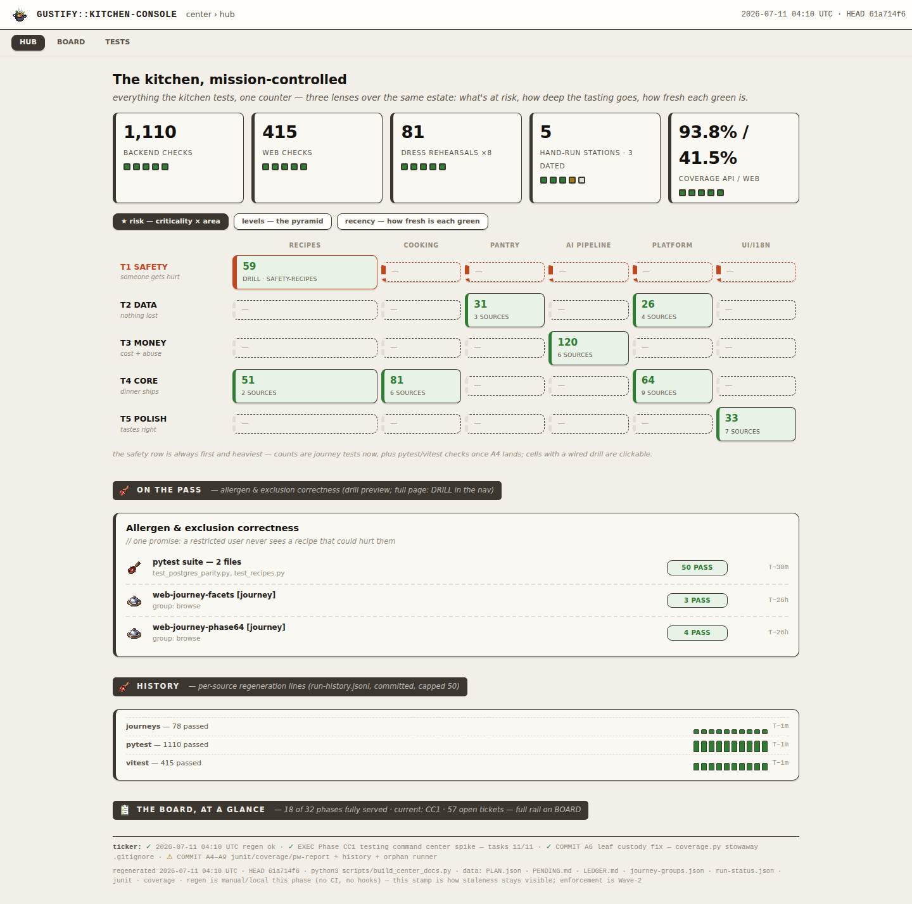
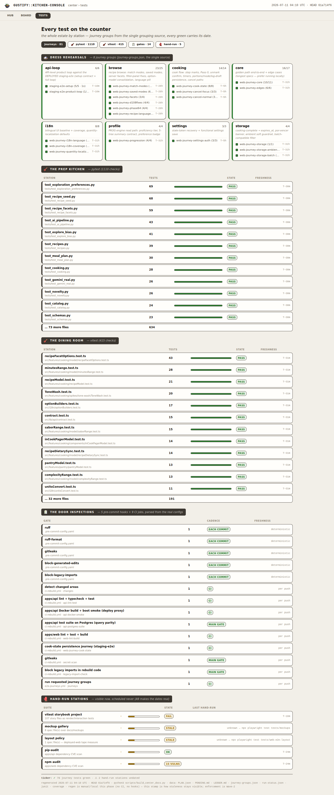
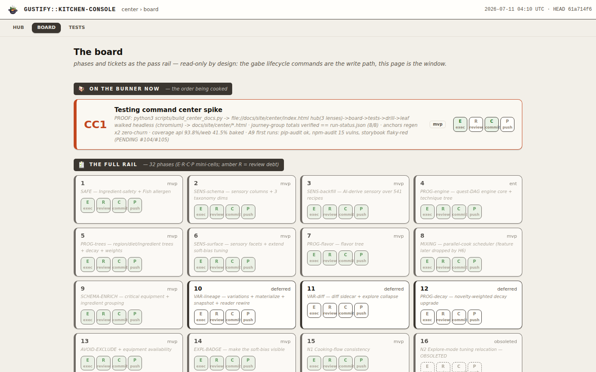
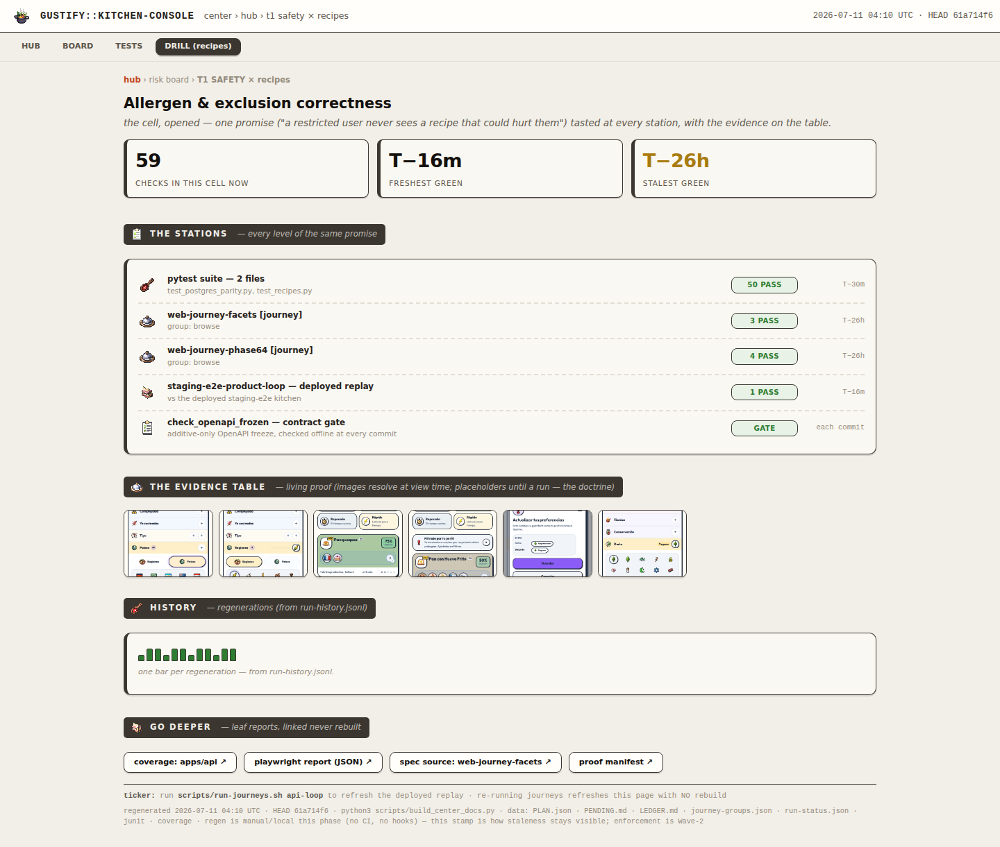
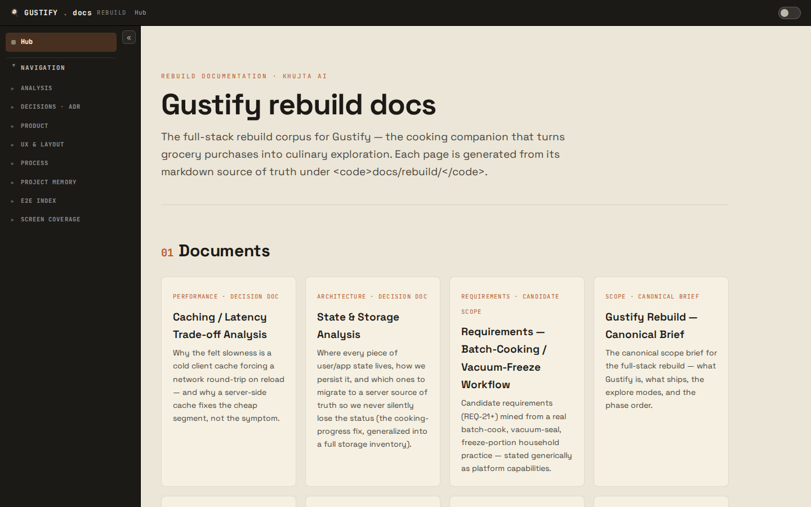

The depth gap, measured — and the architecture that closes it
CC1 built four good-looking pages and passed 7/7 of the acceptance it was given. The operator's verdict is still right — and it is countable:
"this center is super shallow at the moment. I cannot really go through the sections. The drill works only in one section… Almost nothing else is clickable. Evidence tables are super basic. We don't have GIFs. We don't have tests that we can use later for demos. We just follow the layout, that's it."
1 · The shallowness, in numbers
The one honest positive: the generator already loops for drill in CONFIG["drills"] — one drill page exists because the config has one entry, not because the machine can't make more. CC2 is config + template extension over a sound base, not a rewrite.
{kind=link}

{kind=link}

{kind=link}

id="ticket-77").{kind=link}

{kind=link}

2 · The myopic walk — two real tasks, three horizons, all fatal
Task A: "I shipped H8 cook-photos — was it tested? Grab demo material." · Task B: "web coverage is 41.5% — which parts are uncovered?"
| Horizon | Fatal step | What breaks them |
|---|---|---|
| 1-step | first click | Clicks the biggest matching green number ("81 · 6 SOURCES", the 41.5% tile) — silence. No feedback, no next move. |
| 1.5-step | TESTS scan | Finds H8 on the board, carries "H8 = photos" to TESTS — ~50 rows, zero "photo" strings, zero links. Concludes "not tested" — a false claim carried into a demo. |
| 2-step | everywhere | Executes a correct plan and still ends where no door exists: no H8 evidence anywhere, no web-coverage link anywhere. Unreachable at any planning depth. |
3 · Root cause — where the intent got lost
| Artifact | Carried "everything deep-linked, progressive disclosure"? |
|---|---|
| BRIEF, constraint 1 | YES — "EVERYTHING, deep-linked… progressive disclosure is the core UX requirement… navigate across sections" |
| Options report §4 (O3) | YES — L0–L3: "every tile links down"; L2 = per-feature pages, proof galleries, capture MP4s |
| Spike plan v2 | NO — steps name only hub/board/tests + one drill; acceptance said "renders", never "navigates". L2 fell out entirely. |
| The four mockups | NO, by design — they evaluated skin/layout; the 4-page set silently became "the sitemap". |
| CC1 execution | Faithful to v2 — passed 7/7 of what it was asked. CC1 is not the failure; v2's acceptance was. |
Answer to "do we go back to the foundation?" No. The BRIEF and the O3 recommendation already contain the restated intent almost verbatim. The missing thing is one layer that was never written — the IA spec between "recommendation" and "spike steps". 07-site-architecture.md is that layer.
4 · The six decisions D1–D10 never made (operator rules)
| # | Missed decision | Recommendation |
|---|---|---|
| D11 | Site IA & page cardinality | The sitemap below — ~77 generated pages, cardinality a consequence of the data, not a list |
| D12 | docs estate ↔ center unification (D4 decided hosting, never navigation) | Bridge nav both ways now; shells stay distinct (J console / Cifra library); full unification = Wave-2 option |
| D13 | The feature ↔ evidence key (nothing maps phases to specs/suites/proof) | features[] in the ONE overlay file — may MAP, never assert; match lists rendered on-page; unmapped = "not yet mapped — N of 32", never 'untested'. Folds into D6 at Wave-2 |
| D14 | Capture/video policy | Live-probe <video>, never committed (matches D146); stable-name step in run-journeys.sh first (hash names break embeds); GIF = on-demand export only |
| D15 | Navigation acceptance gate ("renders" ≠ "navigates") | Local crawl gate in the regen path (zero CI growth): 0 dead hrefs · 0 unlinked entities · ≤3 clicks · no truncation without a door — plus a myopic re-walk |
| D16 | Tests-as-demos surface ("tests, the percentage, the screenshots" per feature) | The phase page IS the demo surface: tested-by + mapped-test pass rate (the honest per-feature percentage) + captioned gallery + video + print stylesheet |
5 · The architecture — three wings, one navigable place
Skin J untouched. Structure only — the layer the mockups never specified. ▣ exists · ✚ new in CC2
docs/site/ ├─ ▣ docs estate (~30 pages, Cifra) ✚ nav: "TESTING CENTER" ← the bridge in └─ center/ ├─ ▣ index.html — HUB ✚ every number a door; nav gains COVERAGE + DOCS ├─ ▣ board.html ✚ 32 phase cards → phase pages; ticket anchors fixed ├─ ▣ tests.html ✚ groups→pages "serves: H7 H8…"; no "…N more" dead rows ├─ ✚ coverage.html api + web tiles → leaf; per-package table; worst-covered ├─ ✚ phase/<id>.html ×32 THE FEATURE PAGE: story · tested-by + match list · │ pass-rate % · captioned gallery · video · DEMO STRIP ├─ ✚ group/<g>.html ×8 · spec/<s>.html ×21 steps + live-probe shots + capture video ├─ ✚ suite-api.html · suite-web.html ×2 full listings, anchored per file (no 130-page churn) ├─ ▣→✚ drill-<tier>-<area>.html ×8 config gains the 7 missing entries — every cell a door └─ ▣ leaf/ ✚ web-coverage finally LINKED — linked, never rebuilt
~77 generated pages. Adding a phase, group, or spec grows the site with zero code changes. The newest features are the proving ground: H8 cook-photos (proof legs 16/18 + capture pilot), H7 cook-state (13 captioned shots), the prod-readiness edge batch, CC1 itself.
6 · CC2 — the depth pass (spike plan v3)
| # | Step | Kills |
|---|---|---|
| B0 | Cheap CRITICAL fixes + bridges: link web-coverage, fix dead anchors + dup id, DOCS↔CENTER nav both ways | both myopic CRITs, the islands — same-day |
| B1 | Feature registry (features[]): validated, fail-loud, match lists rendered, "not yet mapped — N of 32" | "was X tested?" unanswerable |
| B2 | Doors everywhere: 7 new drills, tiles/rows/cards → pages, "serves:" stamps, truncations → suite pages | "almost nothing is clickable" |
| B3 | L2 sets: phase ×32 (with the percentage) · group ×8 · spec ×21 · suite ×2 — new module _center_pages.py | "we just follow the layout" |
| B4 | Evidence layer: lightbox galleries w/ manifest captions; stable capture names (latest.mp4) then <video> embeds; orphans surfaced | "evidence tables are super basic" · "no GIFs" |
| B5 | coverage.html: per-package tables, worst-covered, doors to both leaf reports | the 41.5% dead end |
| B6 | Tests-as-demos: demo strip on phase pages, print-ready; H7+H8 first | "no tests we can use for demos" |
| B7 | Crawl gate (stdlib, local, in the regen path — NOT CI): dead hrefs, unlinked entities, ≤3 clicks, truncations, unmapped-phase WARN | "renders" ever again passing for "navigates" |
| B8 | Myopic re-walk on the rebuilt center — both tasks must complete at the 1.5-step horizon | residual traps |
| B9 | Close-out: regen ×2 zero anchor churn, README, LEDGER/PLAN, COMMS both ways | lifecycle drift |
data-entity convention, allowlist inside the one overlay, pinned acceptance run-state. Full report: threads/SKEPTIC-depth-pass.md.7 · What the operator rules on now
| # | Call | Recommendation |
|---|---|---|
| 1 | Approve D11–D16 + spike plan v3 (amendments welcome — D12's bridge level and D13's registry shape are the two most judgment-loaded) | approve; CC2 starts at B0 |
| 2 | Commit the suite repo's investigation folder (+ the 4 pre-session modified files) — everything is uncommitted | yes — two commits: docsite fixes separate from the investigation |
| 3 | CC1 Push — Review is DONE (APPROVE, fixes in 1a1f943e); push waits on your inspection of the built center | inspect after CC2's B0 lands (one look instead of two), or now if you prefer the checkpoint |